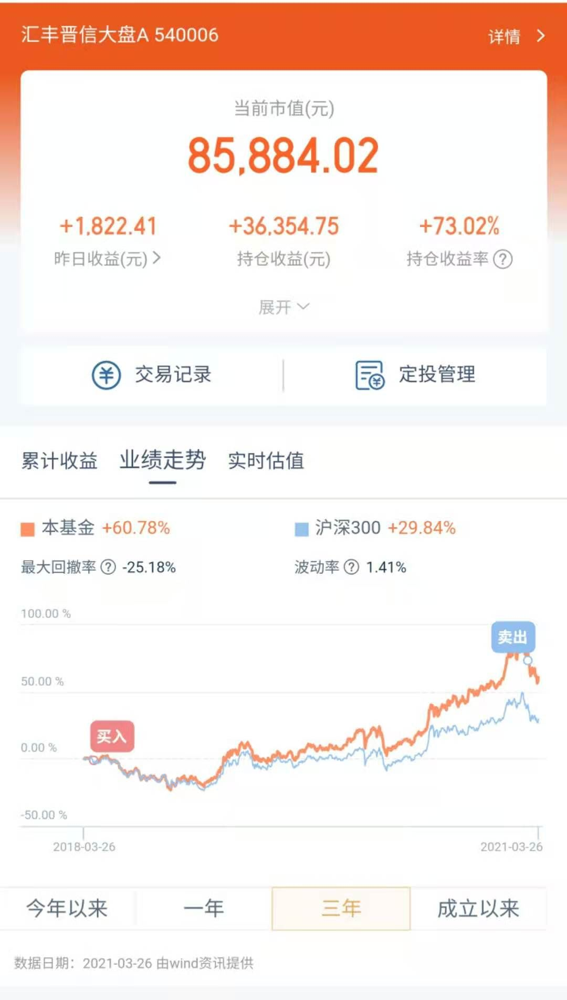
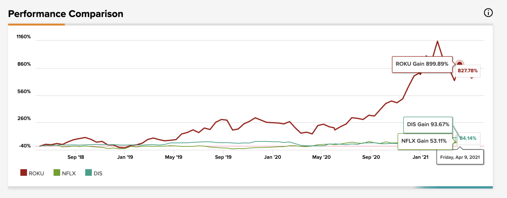
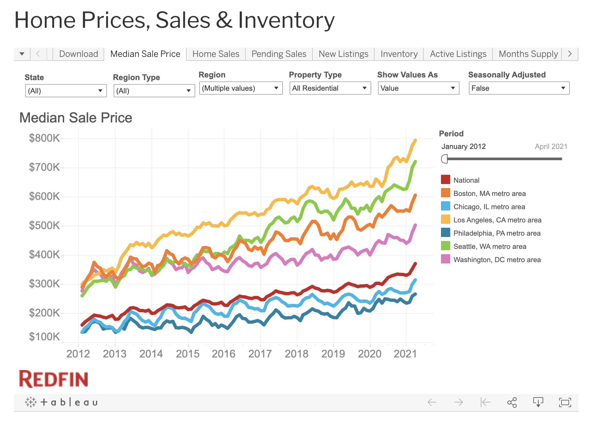
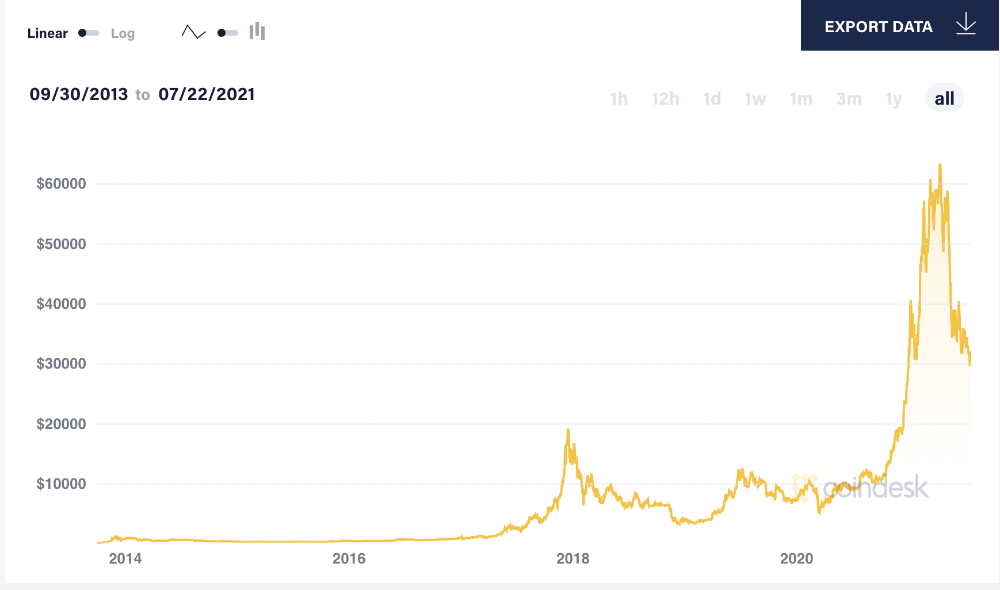
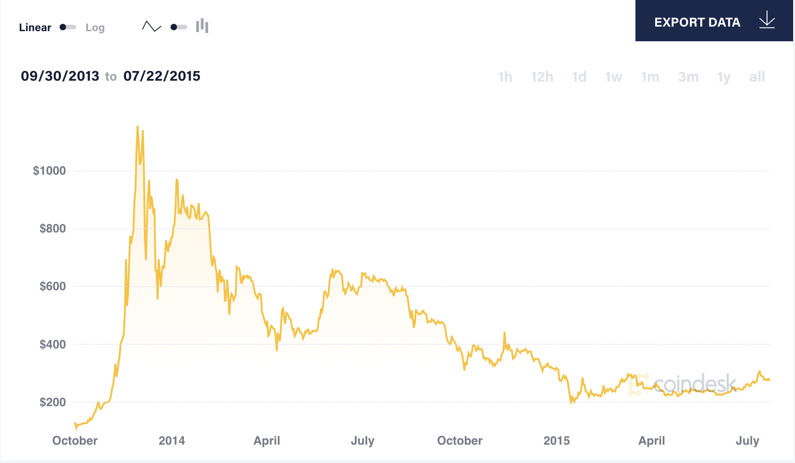

- 00 开篇词 为什么说程序员最适合学财富管理？.md.html
- 01 财富框架：建立属于你自己的财富双塔.md.html
- 02 个人发展：你自己的发展才是最大的财富源泉.md.html
- 03 理财金字塔：如何建立稳固的投资理财结构？.md.html
- 04 实战知识：有哪些收益稳健的经典资产配置组合？.md.html
- 05 支点投资法：主动投资是讲逻辑的！.md.html
- 06 不当韭菜：在财富管理的过程中摆正心态，知己知彼.md.html
- 07 职业方向：如何选择一个有前景的职业方向？.md.html
- 08 职业规划：大公司VS小公司，怎样选择更有前途？.md.html
- 09 期权股权：如何正确处理公司的期权、股权？.md.html
- 10 跳槽涨薪：如何规划一条合理的职业道路？.md.html
- 11 财富拓展：35岁失业？程序员如何拓宽财富渠道？.md.html
- 12 房产投资：如何做出理性的买房决策？.md.html
- 13 实战知识：让我们编程计算下怎么还房贷最合适.md.html
- 14 基金投资：如何让专业人士帮你赚钱？.md.html
- 15 实战知识：如何选出一只优质的基金？.md.html
- 16 股票投资：最适合散户的股票投资方法是什么？.md.html
- 17 投资闭环：如何成为越来越专业的投资者？.md.html
- 18 技术优势：程序员如何用技术超越其他投资者？.md.html
- 19 量化投资：典型的量化投资系统都包含哪些模块？.md.html
- 20 价值投资：永远不过时的中长期投资策略.md.html
- 21 趋势跟踪：怎样跟着趋势一起赚钱？.md.html
- 22 轮动策略：如何踩准市场变换的节奏？.md.html
- 23 对冲思想：这个世界上有稳赚不赔的生意吗？.md.html
- 24 多因子模型：整合不同策略，形成合力的顶层框架.md.html
- 25 机器学习：我们能用机器学习来建立投资模型吗？.md.html
- 26 量化实战：从0到1搭建起一套简单的量化投资系统（上）.md.html
- 27 量化实战：从0到1搭建起一套简单的量化投资系统（下）.md.html
- 番外一 王喆对话李腾：程序员对基金经理的灵魂十问（上）.md.html
- 番外三 有哪些能够持续学习的参考资料和相关网站？.md.html
- 番外二 王喆对话李腾：程序员对基金经理的灵魂十问（下）.md.html
- 番外四 知识总结：这门课的全部思维导图.md.html
- 答疑课堂（一） 财富框架篇、个人发展篇思考题集锦.md.html
- 答疑课堂（二） 投资实战篇、投资进阶篇思考题集锦.md.html
- 结束语 知行合一：财富管理是一生的事情.md.html
- 捐赠
16 股票投资：最适合散户的股票投资方法是什么？
你好，我是王喆。今天我们要讲一讲散户投资者最感兴趣的话题：炒股！
在 06讲 中，我们介绍过，和拥有强大投研团队，能够全职投入的专业投资者相比，我们散户投资者绝对不是一无是处的。我们也有自己的固有优势，那就是“长钱优势”“专业信息优势”和“程序员优势”。今天我要讲的股票投资，风险高，收益也大，如果我们能利用好这三大优势，就更容易获得可观的超额收益。
这一讲，我们就研究一下，如何利用我们散户的三个固有优势，“以己之长，击敌之短”，在股票投资领域找到最合适自己的投资方法。
如何利用“长钱优势”投资？
首先我要谈的是最重要的一项优势，长钱优势。长钱的概念，我们已经在 06讲 中提到过，指的是可以长期不被挪动，只用于投资的资金。资金之所以能成为长钱，是因为投资者相信投资标的的长期发展，为此能够在价格短期波动中坚守信念，长期不动用资金。和有短期业绩压力的机构投资者相比，我们散户投资者自己的资金如果使用恰当，更有希望成为长钱。
正是因为有一大批资金持有者由于畏惧短期波动，不敢持有一些长期看好的股票，所以市场上就总是会存在这种现象：一些标的很有发展前景，但它们的股价却显著低于合理水平。在面对这样的机会时，你就可以利用个人投资者的长钱优势，以低估的价格买入，等待赚取上市公司长期发展和估值修复的两份收益。
这时候你可能想问我：怎么分辨哪些是可以利用长钱优势的股票投资机会？好问题，这些机会往往具有下面两个特点：
第一，一些直接或间接的重大负面因素，严重打压了你熟悉的股票的价格。
这时候，由于市场还在恐慌之中，所以短期内股票的下跌幅度会比较大。机构投资者为了避免基金产品的净值波动，不论这只股票的长期远景是否发生了根本性的恶化，他们都得卖出这只股票。作为个人投资者，你如果熟悉这只股票的基本面，知道短期的负面因素只是暂时的，它的长期发展并没有受到太大的影响，那你就发现了一次可以利用长钱优势的机会。
第二，因为某些股票或者指数的波动规律是受中长期经济规律影响的，如果某只股票或者指数处于一个经济周期的低谷位置，那这就是一个利用长钱做长线投资的绝佳机会。
只说特点还是太抽象，接下来，我就给你举两个利用这些特点进行投资的真实案例。
利用短期负面消息投资茅台的例子
第一个例子来自于一位全职进行股票投资的散户。他只研究自己熟悉的十几只股票，从2012年开始，通过重仓茅台获取了几乎能财富自由的超额收益。他的投资支点，来自于茅台在2012年受到的一次严重打压，和长期的业绩支撑。
2012年到2013年的时候，因为国家禁止三公消费，茅台的股价曾处于长期的跌势。在这个时间点上，几乎没有什么股票型的基金经理敢于冒着这么大的风险建仓茅台。因为基金公司和大部分基民，都没有足够的耐心等待一个三年的机会，短期内的超额亏损就有可能导致大量的赎回行为。
我们知道，“禁止三公消费”其实是一个外部的政策行为，跟茅台本身的竞争力没有本质的联系，而且影响时间并不长。但是市场对于这个政策的反应非常大。大到什么程度呢？茅台的股价从140跌到了34，在2013年末茅台股价最低时，它的市盈率仅有7.43。要知道，当时A股的平均市盈率是22.07。这是什么概念？一个百年知名品牌，中国白酒市场的龙头，在上市公司盈利能力未受明显影响的情况下，市盈率跌到只有A股平均市盈率的1/3。
其实在当时，一些专业的机构投资者，还有一些对茅台有深入研究的个人投资者都注意到了这个机会，但是前者只能忍痛放弃，而后者则可以充分地利用个人资金的长钱优势，重仓抄底。我前面提到的那位全职散户就是其中的一个。
在利用“长钱优势”投资的时候，我们散户投资者一定要注意两个成功的关键点。
第一，散户投资者更要保持稳定的心态。就像我们上面一再强调的那样，和专业投资者比起来，没有来自“金主”的压力就是我们的最大优势。但是我们只有“耐得住寂寞”，稳定投资心态，才能够吃到长钱的盈利。
第二，注意支点投资法中支点的出现与崩塌。我们在 05讲 中详细介绍过支点投资法，在长钱优势的运用中，我们同样要注意支点的出现与崩塌。
举个例子来说吧。如果我们将“三公消费政策”带来的超额下跌作为支点来投资茅台，那么看看现在（2021年8月）的情况：茅台的股价已经非常高了，市盈率也已经涨到了40多倍。很明显，这个政策的影响已经可以忽略不计，我们原来的投资支点消失了。那么，我们还要继续持有茅台吗？我们要不要利用原来投资到茅台上的资金，去寻找下一个支点呢？我想每个人都可以根据自己的判断得出答案。
另外，我还要提醒你的一点是，茅台的这个例子主要是想说明如何利用短期负面消息进行长钱投资，但不要误认为资产配置和风险管理就不重要。这位全职散户之所以敢重仓茅台，是因为他已经全职研究茅台超过三年，拥有足够大的技术优势和信息优势。如果不是在某一领域内具备突出的优势，我们普通投资者还是应该在自己能力范围之内操作股票。
利用周期规律投资大盘的例子
我想给你分享的第二个例子，是我自己利用长钱优势进行股票投资的经历。
我从2018年4月开始逐渐建仓A股大盘股，当时我的投资支点是：从最近20年的周期来看，3000点左右一定是A股的一个价值低点，而且已经处于底部超过两年时间，底部足够坚实。那么我认为，不管是等待一年、两年还是三年，A股一定会有一轮上涨行情。
经过一些不算特别复杂的技术分析，比如调查A股过去20年的市盈率、市净率波动，当前的估值分位数等，我设定了一个投资支点，就是A股的大周期价值修复。这个修复的周期，我大致设定为1到3年。至于具体的退出投资时间，则通过不断验证支点、分析验证结果来确定。

我通过购买几只A股大盘股票型基金来实现了投资想法，图 1 是其中一只基金这三年来的表现。我持有这只大盘股基金3年、盈利73.02%之后，在2021年3月份卖出了一半。这一切都完美遵循了我当初的投资逻辑。
通过这个例子你可以看出，在掌握了支点投资法，懂得利用自己的长钱优势之后，散户赚钱并不是那么困难。你只需要用心观察总结各种投资标的的周期规律，并花不多的时间验证自己的投资想法，就足够提出靠谱的投资支点了。
如何利用自己的“专业信息优势”投资？
除了长钱优势，散户拥有的第二个优势是“专业信息优势”，也就是利用其他投资者不具备的信息优势来指导投资行为。
举例来说，我自己一直在视频流媒体这个行业，对这个行业的认识肯定比其他人强很多，对这个行业投资标的的了解甚至超过大多数专业投资者。而我的一个邻居在著名医药企业“强生”工作，他对于医药行业的认知也肯定比绝大多数人要强。
不过，也别总把散户的“专业信息优势”想得这么高大上，任何一个普通人都有他的信息优势。比如一个大超市的收银员，肯定比一般人更清楚零售百货行业近期是否景气；一位公司前台，也肯定清楚这个公司的业务是否繁忙，公司是不是在大肆招人扩张；甚至一个碰巧住在某车企制造厂附近的退休老人，都能从每天运货卡车的车次，推断出这个车企产品的真实销量。
当然，这里我要提醒一点，我们在利用自己的专业信息优势的时候，是绝不能越过法律红线的。比如，我就绝对不能在规定的交易窗口外，交易自己公司的股票，这是违法的。但是，一定的专业信息优势已经能很大程度上帮我们找到一些可靠的“投资支点”了。
在这里举一个我自己利用专业信息优势投资的例子，让你对这种方式有一个更直接的认识。
熟悉我的同学可能知道，我一直从事广告系统和推荐系统的算法开发工作。更具体地来说，我一直在从事视频广告/推荐领域的工作。四年前，我就对这个行业做了一个分析，这是我当时分析结果的一小部分：
- Netflix作为行业内当之无愧的老大，虽然增长仍然强劲，但是在几乎覆盖了全部可覆盖人群的情况下，不会再有爆发式的增长；
- Disney作为影视行业的巨无霸，已经有了进军线上视频流媒体行业的行动，这是一个非常好的信号。但是，由于Disney存在大量线下业务，因此增长同样不会非常强劲；
- Roku当时是美国视频流媒体平台的老大，刚开始发力内容市场。但是一旦发力，由于有平台的加成，将会有一个非常强劲的增长。

所以从增长的角度来说，Roku的潜力显然是最大的。那么基于我对行业的分析，我们就应该购买Roku的股票。而我的做法更加极端一点：我直接选择了加入Roku，通过获得公司授予的股票来享受我专业信息优势的收益。观察图 2 中这三家公司自2018年的股票走势，你可以看到Roku的股票增长了899.9%，而Netflix和Disney的股票分别增长了53.1%和93.7%。从收益结果看，我当时的决策是正确的。
类似的故事还有很多。假设你是一名自动驾驶公司的程序员，负责视觉算法的研发，那你肯定清楚在这个行业，到底哪家公司生产的视觉传感器和测距雷达质量更好，哪种设备才是未来的主流。基于这个判断，我们就可以找出最有前途的生产视觉传感器或测距雷达的公司，进行投资。
而且，由于普通投资者根本不具备这样的技术调研能力，所以这类公司对于他们是“隐形”的。这类只有从业者才会发现的有价值的公司又被称为“隐形冠军”。
再举个更加生活化的例子：假设你平时比较爱玩游戏，而且在游戏圈里是高级玩家，一款新游戏出品后，你只要玩上三四个小时就能判断它会不会流行。那么，毫无疑问，你又发现了一座金矿：对于游戏公司的业绩，你比别人，甚至机构投资者预判得更准，利用这项信息优势变现就是再直接不过的事情。
总之，作为“术业有专攻”的散户投资者，你可以利用自己的行业信息优势，进行一些很精细化的投资。
如何利用好我们的“程序员优势”？
今天我们要讲的最后一项优势，其实是数据分析优势，但因为这门课是专门讲给我们程序员的，所以我更愿意把它叫做“程序员优势”。和其他的普通投资者相比，这个优势还是非常突出的，如果你运用得好，在一些特定问题上甚至不输专业投资者。
举个例子，假设你希望深耕汽车制造领域的股票投资，那么作为一名程序员，你可以构建哪些高于其他投资者的壁垒呢？我想到的第一个行动就是写一些爬虫，把各大车企的公开销售数据、相关的国家进出口数据、PMI（采购经理人指数），以及原材料相关的数据全都爬回来。然后，加入一些报警机制，甚至发掘这些数据和股票之间的相关性，找到一些投资规则。
这套系统发展下去就是一个成熟的量化投资系统，我们在之后的课程中还会详细介绍。但我要说的是，即使你只是建立起了最简单的信息收集程序，然后根据可靠的数据进行投资，你也已经超过了市场上90%以上的投资者。

今天咱们主要讲股票，但是除了股票投资领域，我们也可以在其他领域充分利用我们的程序员优势。比如，我在购买投资房的过程中，就用程序处理过美国某线上房产中介网站的公开数据集（如图 3 所示），也曾经抓取过国内某中介机构的线上信息，用来指导我的买房策略。事实证明，这些操作让我的房地产资产至少增加了几十万的超额收益。
你看，花两三天时间写几个小程序，就能帮你在重大投资行为中增加几十万的收益，这种低投入、高回报的事情，我们程序员为什么不做呢？
总结
今天，我主要讲了对你来说最合适的股票投资方法。其实最适合我们的“炒股”方法，并不是一个具体的策略，一个万能的选股方法，而是充分利用我们的固有优势。具体来说，就是要用好我们的“长钱优势”“专业信息优势”和“程序员优势”。下面，我再总结一下，如何利用这三大优势进行股票投资。
- 长钱优势：要稳定投资心态，基于你的长线投资支点进行投资。做到这一点，你就比那些由于业绩压力，很难沉得住气的专业投资者强很多；
- 专业信息优势：要懂得分析自己掌握了哪些别人很难获取的信息，然后以此构建自己的信息壁垒，指导自己的投资行为；
- 程序员优势：要懂得在自己的投资过程中多用程序整合、处理、分析信息，甚至构建一个简单的量化系统，基于数据进行投资，这是我们程序员独有的优势。
总之，我们在投资股票的时候，就是要“以己之长，击敌之短”。我不敢说你能够次次获胜，但累积下来，你一定能够获得最应该属于你的那份财富收益。
最后需要补充一句，这一讲涉及的股票仅用于举例说明，不构成任何购买建议。
思考题
- 结合你现在所处的行业，或者你掌握的不同于他人的信息源，谈谈你有什么专业信息优势。
- 下面，我给出了比特币最近7年的走势，通过这个走势图（来自coindesk），你能发现什么规律？如果让你根据这个规律，制定一个当前的长期投资策略，你会怎么制定？


欢迎你在留言区与我交流讨论，我们下一讲见。
© 2019 - 2023 Liangliang Lee. Powered by gin and hexo-theme-book.